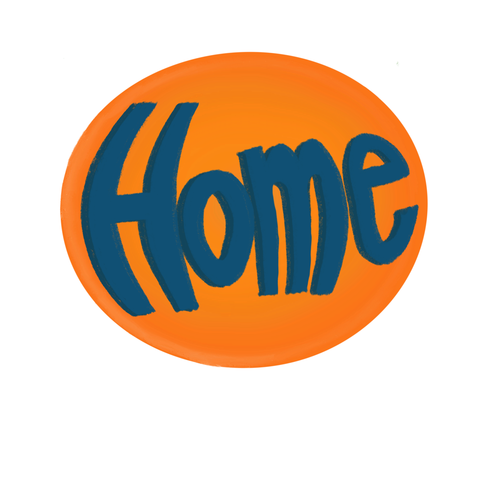
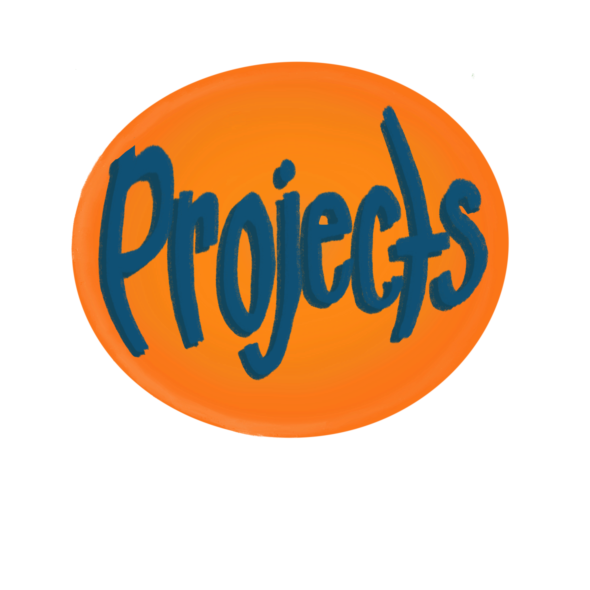

|  |  |
My name is Alex Wong. I am from Berkeley, California, but I have since moved to Boston, Massachusetts to continue my education. Currently, I am pursuing a B.S. in Computer Science at Northeastern University. I enjoy exploring my appreciation for the field by utilizing my creativity to develop engaging projects. My interest in computer science continues to assist me in my pursuit to further evolve into a curious, dedicated, and forward-thinking person.
Currently, I am a teaching assistant at Northeastern University’s Khoury College of Computer Sciences. I hold weekly office hours to help answer student questions in a one-on-one setting, provide assistance during my assigned lab section, and grade assignments. I work to find engaging ways to help students understand challenging material.
In a future career, I hope to be a part of another team which can share my mission to create an inclusive community. I believe that a setting where all can freely express themselves while feeling safe, respected, and heard is essential for positive collaboration and productivity. I want to promote open dialogue and an understanding of all perspectives to help the team in accomplishing a shared goal.
Additionally, I have a deep appreciation for creative outlets beyond computer science. Particularly, I enjoy curating sustainable, unique clothing pieces. I find clothing to be my favorite medium of self expression; it allows me to physically display my internal mood. Besides this, in my free time, I am a frequent museum visitor. From the Asian Art Museum in San Francisco, to the Museum of Fine Arts in Boston, I find comfort in exploring creative spaces. When I am indulging in my creative passions, you will often find me immersed in a video games. I enjoy the opportunity to explore challenges in fantastical, new settings.
I'm excited to continue my journey in computer science and explore the intersections of technology, creativity, and sustainability. Feel free to connect with me on LinkedIn, and thank you for stopping by!